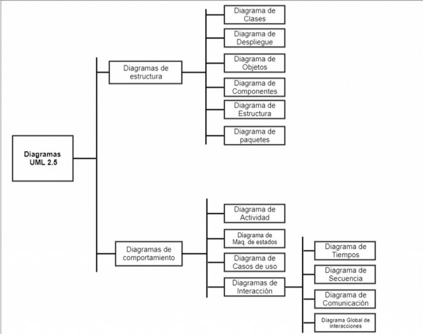

Diagramas do UML
UML non é unha metodoloxía, senón que é unha notación para modelar un sistema, polo que non permite describir a documentación de usuario nin a interface gráfica, por exemplo. Así pois, ao empezar un proxecto software, primeiro deberase escoller a metodoloxía baixo a que se vai a traballar e despois utilizar UML ao longo do ciclo de vida que marque a tecnoloxía elixida.
UML esta composto de varios símbolos gráficos combinados seguindo unhas regras para formar diagramas. O conxunto dos diagramas formará o modelo e cada un deles aportará unha perspectiva diferente do sistema. Un modelo UML pode definirse como unha abstracción dun sistema ou dun problema que hai que resolver, considerando un certo propósito ou un punto de vista determinado. Indica que é o que vai facer o sistema pero non indica como o vai facer. O código fonte é a expresión máis detallada do modelo pero non é unha ferramenta cómoda de comunicación, sería máis cómoda unha gráfica. Un diagrama permitirá representar graficamente un conxunto de elementos do modelo, a veces como un grafo con vértices conectados, e outras veces como secuencias de figuras conectadas que representen un fluxo de traballo.
Un resumo dos diagramas propostos por UML 2.5 pode verse no seguinte esquema:
